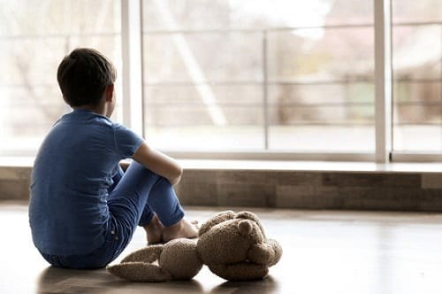
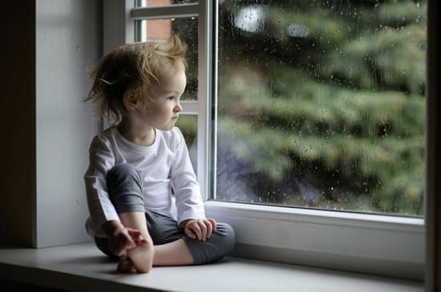
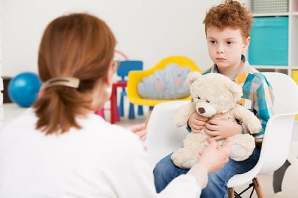
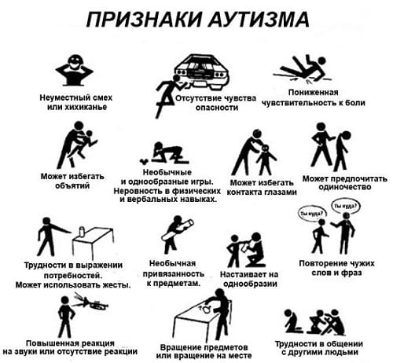
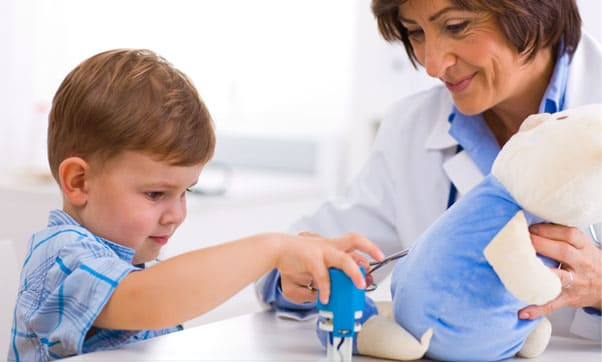

Аутизм — нарушение работы мозга, когда некоторые его части, отвечающие за коммуникативные способности, поведение, социальную деятельность, обучение и координацию, не работают должным образом. Ребенок с аутизмом не перерабатывает информацию, получаемую с помощью органов чувств (сенсорную), и часто не способен адекватно и понятно отреагировать на нее. Повреждения у разных больных отличаются в том числе и степенью выраженности. У одних могут наблюдаться только некоторые из признаков аутизма, у других — многие или все.
Возможно, сегодня аутизм — самая огорчающая болезнь, поражающая наших детей. Заболеваемость резко выросла в последнее десятилетие, сейчас у 1 из 150 детей находят признаки аутизма. Особенно тяжелым для родителей это заболевание делает то, что оно появляется неожиданно. Ни с того ни с сего здоровый и неврологический нормальный младенец вдруг регрессирует в аутизм между первым и вторым годами жизни. Некоторые не регрессируют, они просто прекращают подниматься по нормальным социальным и языковым ступеням. У некоторых признаки аутизма появляются с рождения.
Столь же сокрушительным является и то что, когда у ребенка диагностирован аутизм, врач не может сказать родителям, из-за чего он развился. Не найдено никаких физических отклонений, которые можно было бы расценить как причину аутизма. Хотя о причине аутизма известно немного, мы много знаем о его ранних диагностике и лечении. Мы предлагаем вам справочник по признакам аутизма, методам раннего его выявления, начальным шагам, которые могут предпринять родители при подозрении на аутизм, и общих подходах к лечению, применяемых или исследуемых.
ПРИЗНАКИ И СИМПТОМЫ
• Речь слабо развита или отсутствует, неадекватное использование речи или повторяющая речь.
• Самостимулирующее поведение: например, размахивание руками или повторяющиеся движения.
• Не воспринимает обычные социальные ограничения или не знает, как себя вести и взаимодействовать в обычных социальных ситуациях.
• Одержим повторениями и «сходством».
• Ест только определенные продукты и отказывается пробовать новые.
• Слабое воображение, не способен играть в «кого-то» (повара, машиниста, врача...).
• Заметно гиперактивен или, наоборот, гипоактивен и малоподвижен.
• Бывают вспышки гнева, скорее внезапные, чем ожидаемые, не связанные с ситуацией.
• Играет один в собственном мире.
• Одержим вращающимися объектами: например, колесами или вентиляторами.
• Играет с игрушками иначе, чем игрушка предназначена.
• Чрезмерно агрессивный, или агрессия направлена на себя — может кусать себя за руки, ноги, биться головой и т.п.
• Необычно высокая или низкая болевая чувствительность.
• Плохо устанавливает зрительный контакт или рассматривает объекты искоса, боковым зрением.
• Его очень беспокоят скопления людей, шум, беспорядок.
• Старается избегать и даже демонстрирует враждебность при попытке обнять его или других тесных контактах.
• Ему очень мешают ярлычки на одежде, неудобная обувь, запахи, травинки или песок на ногах.
• Хроническая диарея или пищевые аллергии.

ВИДЫ НАЧИНАЮЩЕГОСЯ АУТИЗМА
Аутизм бывает «всех форм и размеров». Это «спектральное» нарушение, т.е. оно может проявляться в диапазоне от чрезвычайно умеренного и еле обнаружимого (как синдром Аспергера) до очень тяжелого течения. Существуют два очень разных типа начала аутизма, о которых родители должны знать.
Ранний детский аутизм. У некоторых малышей наблюдается недостаточность установления зрительного контакта, взаимодействия, привязанности и обедненность мимики уже в первые месяцы жизни. Таких младенцев обычно считают просто «легкими детьми», но по существу они слишком уж «легки». По мере роста в течение первого года жизни они не начинают вовремя лепетать, их вокализация остается незрелой, младенческой. После года они не говорят ни слова, и становится очевидно, что они не могут социально взаимодействовать. К двум годам появляется больше признаков аутизма, и диагноз становится ясен. Принято считать, что эти дети, в сущности, рождаются с аутизмом.
Регрессивный аутизм. Этот тип более распространен. Ребенок выглядит полностью здоровым, нормально развивается и может даже начать говорить несколько слов. Затем в возрасте между годом и двумя такие дети останавливаются в развитии или даже регрессируют, утрачивая многие возрастные навыки, включая речь. У тех, кто регрессирует, к двум годам обычно появляются другие признаки аутизма, и расстроенные родители задаются вопросом, что же случилось с их ребенком, куда он делся. У тех же, кто просто останавливается в развитии, аутизм часто не выявляют примерно до трехлетнего возраста.
РАННЯЯ ДИАГНОСТИКА И СКРИНИНГ
Чем раньше выявить аутизм и начать адекватную коррекцию развития, тем лучше будет результат. Дети, у которых рано (в возрасте от 18 месяцев до 3 лет) был выявлен аутизм и начаты речевая, языковая, поведенческая, физкультурная коррекция, обучение трудовым навыкам, социальная адаптация и медикаментозное лечение, добивались лучших результатов, чем поздно (в 4 года и старше) диагностированные и начавшие лечение. Они раньше проходят этапы развития, достигают более высокого уровня социальной активности и взаимодействия, лучше учатся и у них больше вероятность развиваться как «обычные» дети (или как почти «обычные»).
Методы скрининга, которые может использовать педиатр. Врачи, как и родители, имеют обыкновение не слишком серьезно относиться к задержке речи и отклонениям поведения, надеясь, что ребенок перерастет их. Родители часто слышали: «Ну, он же мальчик! Мальчики начинают говорить позже». Теперь так не пойдет. Учитывая учащение случаев аутизма, врачи стали бдительны как никогда раньше. Скорее всего, ваш врач попросит вас заполнить стандартную скрининговую анкету при плановом осмотре в 18 месяцев и в 2 года. Здесь мы приводим вопросы, выбранные из Контрольного списка для диагностики аутизма у детей до 3 лет (по-английски СНАТ —Checklist for Autism in Toddlers):
• Ваш ребенок любит, когда вы его качаете и подбрасываете у себя на коленях?
• Ваш ребенок получает удовольствие от физического контакта, жаждет вашего внимания?
• Ваш ребенок проявляет интерес к другим детям?
• Ваш ребенок любит играть в «ку-ку» (закрывая лицо ладошками и убирая их), прятки, другие игры с несколькими участниками?
• Ваш ребенок играет в ролевые игры, такие как «ходить в гости», «кормить куклу», «готовить»?
• Ваш ребенок использует указательный палец, чтобы показать на предмет или попросить что-либо?
• Ваш ребенок играет с игрушками по их назначению (машины, кубики, куклы) или просто гримасничает, крутит их или бросает?
• Ваш ребенок приносит предметы, чтобы показать вам?
• Может ли ваш ребенок к двум годам говорить несколько простых слов и связать два-три слова в предложение?
Родители должны знать, что у любого ребенка будут одно-два «нет» в этом опроснике — и это не повод для беспокойства. Это скрининговый, а не диагностический тест. То есть он предназначен для выявления малышей, у которых может быть задержка развития. Он не используется для диагностики и по его результатам ребенку не могут повесить ярлык аутизма только потому, что он не соответствует нескольким критериям.
Врач также отследит, как ребенок общается во время визита. Снова обратимся к СНАТ — он должен определить следующее:
• Поддерживает ли ребенок зрительный контакт?
• Проявляет ли ребенок интерес к тому, на что врач покажет, говоря: «Посмотри-ка на это, (имя ребенка)!»
• Правильно ли ребенок играет с игрушкой: например, если дать девочке куклу и чашку, будет ли она поить куклу? Или будет ли мальчик толкать машинку, изображая шум двигателя?
• Когда врач говорит: «Где свет?» - ребенок смотрит на врача, а потом указывает на свет указательным пальцем?
• Может ли ребенок поставить друг на друга несколько кубиков?

СОВЕТ ДОКТОРОВ СИРС: ТОЛЬКО ПОЗДНЯЯ РЕЧЬ - СКОРЕЕ ВСЕГО, НЕ АУТИЗМ Подобно нормальным поздноходящим, многие дети, особенно мальчики, — поздноговорящие. Если это единственный признак и другие симптомы из списка отсутствуют — это, скорее всего, не аутизм. |
ДИАГНОСТИКА
По результатам скрининговых тестов диагноз аутизма не ставится. Они просто помогают врачу и родителю решить, возможна ли задержка развития нужно ли дальнейшее тестирование. Если ваш ребенок не прошел скрининговый тест или некоторые отклонения очевидны и без теста, значит, пришло время для более глубокой проверки. Варианты следующие:
Государственный региональный центр развивающей терапии. В США есть сеть центров, расположенных по всей стране, которые обеспечивают диагностику и полный спектр терапевтических методов для коррекции всех видов нарушений развития у детей до 3 лет. Врач или другой специалист центра осмотрит вашего ребенка бесплатно.
СОВЕТ ДОКТОРОВ СИРС: НЕ ВЫЖИДАЙТЕ! При наличии проблемы чем скорее ваш ребенок начнет получать лечение, тем лучше. Решив выжидать и наблюдать или, последовав совету врача, подождать полгода и прийти на повторный осмотр, вы можете навредить своему ребенку. Если же вы обратитесь за специализированной помощью и окажется, что ваш ребенок в полном порядке, то вы всего лишь потратили впустую некоторое количество денег и времени. Но выжидая, пока проблема не станет слишком очевидной, а диагноз — бесспорным, вы теряете несколько месяцев, а то и лет ранней коррекции. |
Система государственных школ. После того как ребенку исполнилось три года, все диагностические и терапевтические услуги в США предоставляются местным отделением специального образования государственной школы.
Детский невропатолог. Этот врач может оценить и диагностировать вашего ребенка. Лучше обращаться к тому, который специализируется на этой проблеме или работает в центре, занимающемся коррекцией аутизма.
Развивающий педиатр. Специалист, занимающийся этим разделом педиатрии, всесторонне оценит развитие ребенка, чтобы определить вероятность наличия аутизма.
Логопед. Часто первым признаком аутизма становится задержка речи. Логопед поможет вам решить, является ли отставание речевого развития у вашего ребенка просто изолированной задержкой или частью формирующейся большой проблемы.
Другие врачи. Вы также можете обратиться к врачам, специализирующимся на лечении аутизма, например к специалистам по трудотерапии, коррекции сенсорной интеграции, прикладному анализу поведения1, чтобы узнать их мнение именно об этих аспектах развития.
Критерии диагностики. Для диагностики аутизма установлен определенный и детализированный перечень критериев. Специалист будет наблюдать за вашим ребенком, чтобы определить, подходит ли он под эти критерии. В заключении будут отражены: ё наличие затруднений социализации из-за невербального общения (зрительный контакт, мимика, жесты, позы), способность устанавливать партнерские отношения, взаимодействовать с другими, сопереживать;
• наличие затруднений речевой коммуникации или, если ребенок умеет говорить, — отказ начинать или поддерживать беседу, повторений за собеседником, не относящихся к предмету беседы высказываний, неспособность перевоплощаться или включать воображение во время игры;
повторяющееся, одержимое, навязчивое или стереотипное поведение, например, фиксация на структурах или режимах, патологические движения или сильная озабоченность, узким кругом интересов.
Другие виды нарушений «аутичного спектра». Для обозначения ребенка с отклонениями «аутичного спектра», но не соответствующего всем диагностическим критериям аутизма существуют несколько терминов:
Иные прогрессирующие нарушения развития (ИПНР). Применяется к ребенку до 3 лет, у которого есть задержка большинства аспектов развития, но недостаточно типичных проявлений для постановки диагноза аутизма. При оценке задержки развития малышам часто сначала ставят диагноз ИПНР, меняя его на аутизм, если спустя шесть-двенадцать месяцев проявления аутизма становятся очевидными. Зачастую ИПНР — аутизм, ждущий своего часа, чтобы развиться во всей красе. Лечение необходимо начинать сразу же, не ожидая полноценного диагноза аутизма.
Синдром Аспергера. При этом нарушении, также известном как аутизм с хорошим развитием, у ребенка нормально развивается речь. Малыши с синдромом Аспергера начинают говорить в том же возрасте, что и обычные дети, а становясь старше, могут более-менее нормально поддерживать разговор. Тем не менее по мере взросления у них появляются аутичное поведение, странности и нарушения социального взаимодействия. Диагноз обычно устанавливается позже, чем у детей с аутизмом, из-за нормального речевого развития. Лечение практически такое же, как при аутизме.
Невербальное расстройство обучения (НРО). Этот диагноз описывает ребенка, который не понимает тонкостей невербального общения и социальных стимулов, но не имеет типичных поведенческих и неврологических признаков аутизма. Он также страдает нарушениями тонкой и грубой моторики, так как его мозг с трудом оценивает пространственные взаимоотношения. Он отличается от синдрома Аспергера тем, что знает и озабочен тем, что не понимает невербальные сигналы. Он знает, что отличается от других, и это беспокоит его. Ребенок с аутизмом не знает, что он другой (пока не выздоровеет), а дети с синдромом Аспергера знают, но это их не тревожит (до выздоровления). Это диагноз состояния, которое до сих пор остается непонятым. Причины, вызывающие его, могут быть те же, что и при аутизме, и, возможно, его надо относить к расстройствам аутичного спектра.
Нарушение сенсорной обработки (или нарушение сенсорной интеграции). Это нарушение происходит, когда мозг ребенка не знает, как правильно обработать информацию, поступающую от воспринимающих (сенсорных) органов. Мозг получает сигналы от всех пяти органов чувств, но не знает, как должным образом превратить эту информацию в нормальные поведенческие и моторные реакции. Это приводит не только к трудностям при контакте со многими обычными вещами, сопровождающими детство (такими, как грязные руки, пятна на одежде, шумные и неупорядоченные игры, различные текстуры пищи, ходьба босиком по песку или траве), но и к полной дезорганизации в мозгу, что может проявляться нарушением внимания, проблемами при необходимости следовать инструкциям, сложностями с удержанием равновесия и координацией движений, постоянными суетливыми движениями и невозможностью усидеть на месте, некоторой социальной неуклюжестью. Речевое развитие обычно нормальное. У многих детей с аутизмом наблюдаются нарушения сенсорной интеграции, но расстройство может наблюдаться самостоятельно у неврологически здорового ребенка.

ЛЕЧЕНИЕ
Существует множество аспектов лечения ребенка с аутизмом, как медицинских, так и поведенческих. Все они важны и дополняют друг друга.
Поведенческая терапия. Поведенческая терапия направлена на стимуляцию, обучение и развитие частей мозга, которые плохо функционируют. В план лечения должны быть включены большинство, а то и все перечисленные ниже способы:
• индивидуальные методики, такие как прикладной поведенческий анализ, структурированное обучение, обучение по программе Флор Тайм, которые призваны поэтапно обучать определенным навыкам;
• групповые программы при школах, когда дети с аутизмом и обычные обучаются в одном классе с высоким соотношением преподаватель обучаемый, при этом используются различные методики обучения детей;
• обучение социальным навыкам с помощью индивидуальных программ, таких как «родство по развитию» или группы, где детей обучают, как взаимодействовать с другими детьми;
• речевая и языковая терапия помогают повысить вербальное общение, а не разговаривающие дети могут обучиться использовать систему рисунков (наподобие системы общения с помощью обмена картинками);
• трудотерапия помогает укрепить мышцы и улучшить их координацию;
• сенсорно интегрированная трудотерапия помогает детям научиться правильно обрабатывать прикосновение, звук, вкус, запах.
Медикаментозное лечение. Медикаментозное лечение призвано корректировать любые проблемы со здоровьем, которые связаны с аутизмом, и имеет два основных направления:
• препараты для лечения приступов (если они есть) и помогающие регулировать агрессию, гиперактивность и другие манифестные проявления аутизма — обычно их назначает детский невропатолог или психиатр;
• лечение сопутствующих заболеваний, таких как хроническая диарея или запор, пищевые аллергии, кишечные и вирусные инфекции, дефицит витаминов и минералов, нарушения обмена, отравления тяжелыми металлами, каждое из которых может провоцировать усиление аутистической симптоматики — поле деятельности так называемой альтернативной медицины. Как показывает практика, эти подходы становятся все более популярными. Доктор Боб более подробно освещает эти новые методы лечения в «Книге об аутизме».

Здоровье ребенка от докторов Сирс / Сирс У. и др.